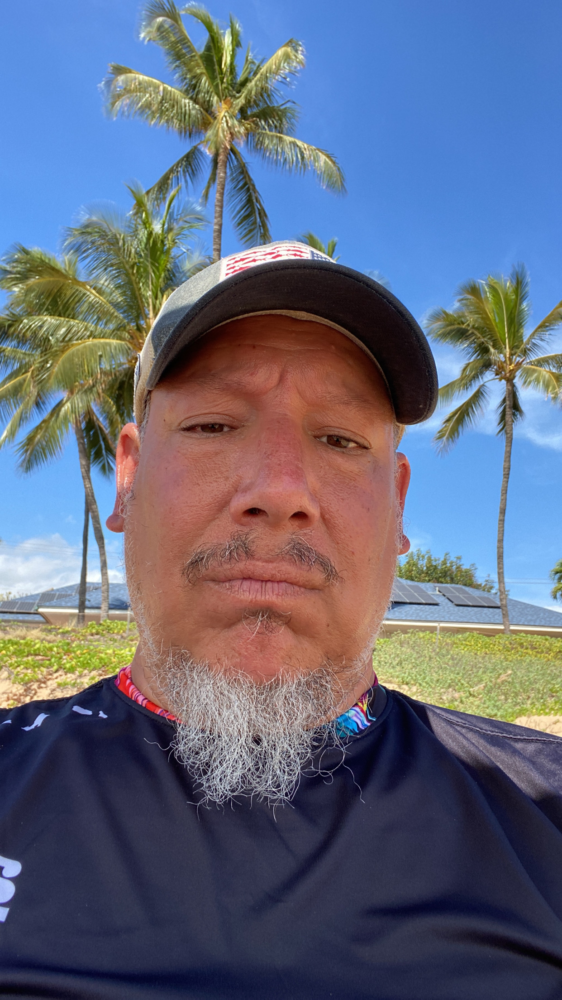

|  | Ryan Neff |
Dad, Husband, and Chief Project Engineer of the Neff Family |
As a father of three young children, a husband to a beautiful wife, and the main source technical projects in the household I have decided to up my game and learn Web Development in support of a much larger project. What you'll see as you go through this resume page is what has led me to this point in life and career.
University of Alaska Anchorage
Associates of Science in Telecommunications, Electronics, and Computer Technologies
National Airway System Area Specialist
I am a National Airway System Area Specialist (NAS) for the Federal Aviation Administration at the Anchorage,
Alaska Air Route Traffic Control Center. The basic duties of a NAS is to monitor all FAA equipment in the state
of Alaska and when something breaks, it is my job to inform the appropriate technical team to initiate repairs. It
also includes negotiating release of equipment from the Air Traffic Controllers so that technicians may do periodic
maintenance to insure the integrity of the National Airway System.
Electronics Technician - Instructor
As an Electronics Technician - Instructor at the FAA Academy, it was my duty to create, present, and revise curriculum used
for the instruction of new hire and seasoned FAA Airway Transportation Systems Specialists (ATSS). During my tenure at the
FAA Academy, I was assigned to the task of course coordinator for a small number of classes. As a course coordinator
it was my job to become a subject matter expert in what was taught in my courses. I was also in charge of making sure
that contract instructors could answer any questions that came up. If they could not answer, I would provide the appropriate
answers.
I was also part of a technology refresh for the division I worked in. We actively moved the division and then the entire academy
to a paperless format. This move saved the FAA over a million dollars per year and our division received awards and recognition
for the transition.
I was also a curriculum developer for the highly successful new hire common principles course. It was my job to develop coursework
and labs in basic electronics, computer networkiing, and UNIX/LINUX for new hires.
Airway Transportation Systems Specialist
I was an Airway Systems Specialist for the FAA in Alaska. During this time it was my job to maintain FAA equipment in some of the
remotest areas and villages of Alaska. My main area of work was in northwestern Alaska, an area larger than the state of Texas, but
it was not unusual to travel to other parts of the state. I had learn and earn certifications to work on several systems to include:
Collegiate Training Initiative Student
As a Collegiate Training Initiative Student for the FAA, it was my job to learn the job of an ATSS by starting training and accompanying
seasoned ATSS's in the field. During this time my schedule was variable to accomodate college coursework. Upon successful graduation from
an approved college, there was an opportunity to be hired as an ATSS.
| Skill | Level | |
| Portuguese | Expert | |
| Spanish | Moderate | |
| Electronics | Expert | |
| Python | Moderate | |
| Arduino Code | Moderate/Expert |